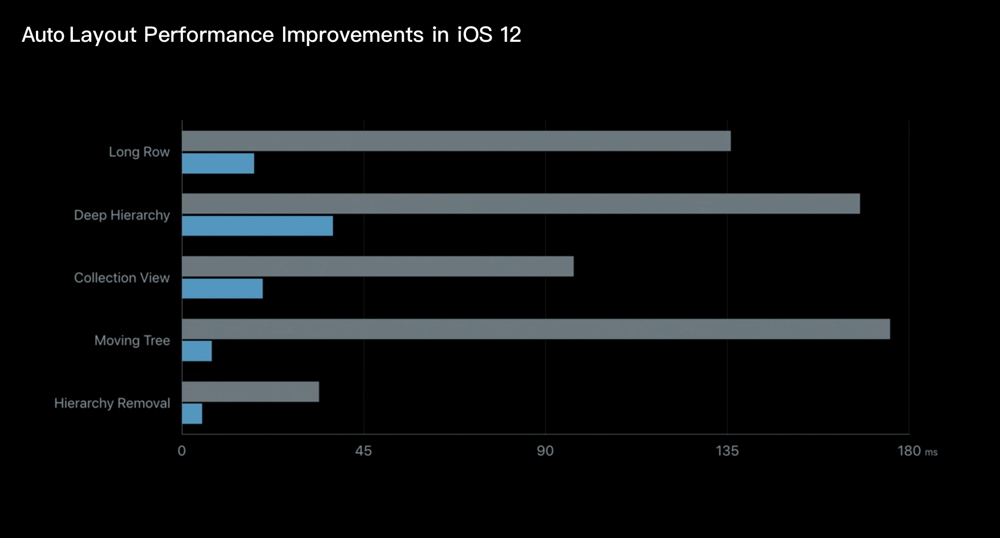
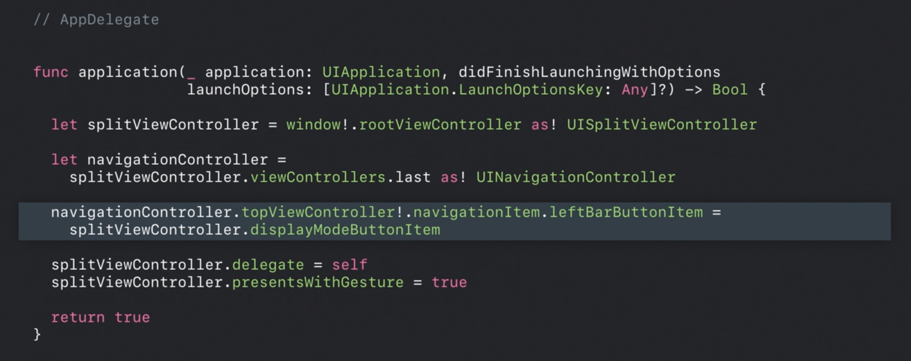
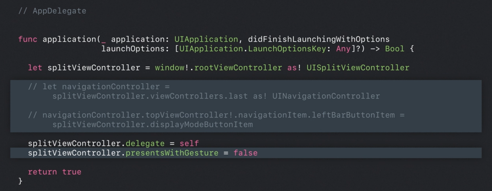
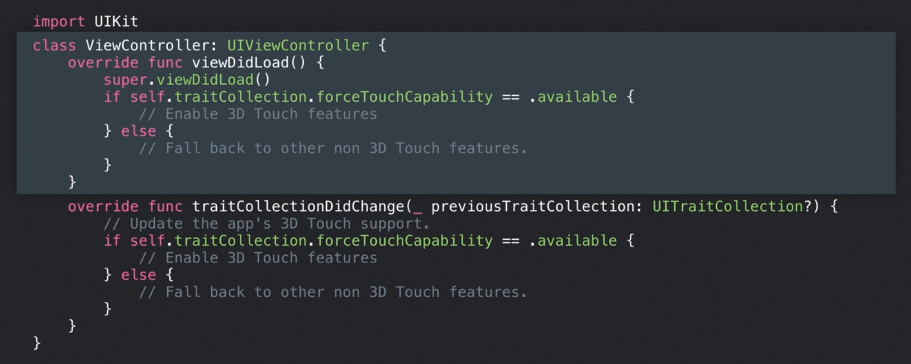
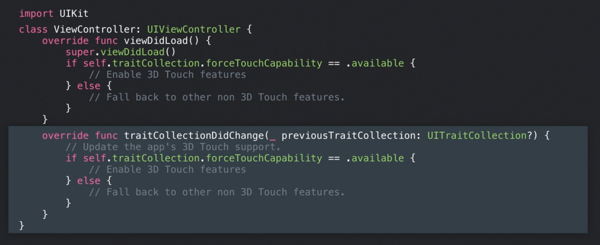

在人民群众的热切期盼下，比 iPhone X 更大、刘海屏版的 iPhone 8 Plus —— iPhone Xs Max 终于在 2018 年 9 月苹果秋季发布上发布，一同发布的还有升级版的 iPhone X —— iPhone Xs 和看似低配实则仍然很贵的 iPhone Xʀ。正如去年文章中推测的一样，iPhone Xs Max 的分辨率是在 iPhone 8 Plus 的基础上保持宽不变高拉长的规律且保持与 iPhone X 一致的屏幕比例，即为 1242px × 2689px。那设计、适配运行在 iPhone Xs Max 上以及 iPhone Xʀ 上的 app 又有什么需要注意的呢？这就是本篇文章想要探讨的主题。
iPhone Xs Max、iPhone Xs 广告：
iPhone Xʀ 广告：
- Note:
在进一步阅读此文章前，推荐先阅读这篇文章的姊妹篇，看看初代刘海屏手机上 app 的那些设计和开发问题，再来更好地理解全新 iPhone 的变化：
2018 年 10 月苹果秋季发布会上，iPad 也与 Home 实体键说再见了，想了解全新 iPad Pro 的更多设计和适配细节，推荐阅读下面这篇文章：
屏幕尺寸的变化
- iPhone Xs 的屏幕尺寸以及屏幕分辨率与上一代的 iPhone X 没有任何区别，仍然是 375 × 812pt @2x。
- iPhone Xs Max 的屏幕尺寸是 6.5 寸，其屏幕分辨率是在 iPhone 8 Plus 的基础上保持宽不变高拉长，即 414 × 896pt @3x。其比例因子与 iPhone 8 Plus 一样，同是 @3x。
- 对于 6.1 寸的 iPhone Xʀ，其屏幕分辨率是 414 × 896pt @2x，和 iPhone Xs Max 不同的是其比例因子为 @2x，但它们以 pt 为单位的屏幕分辨率是完全一样的，这就意味着在这两款设备上运行相同的 app，看到的内容是完全一致的。
- 新发布的三款 iPhone 设备的屏幕比例都大约为 9:19.5。
注：iPhone 8 Plus 物理设备的屏幕在渲染时是在上述屏幕分辨率基础上进一步进行了缩放，实际屏幕物理分辨率为 1080px × 1920px。
- Size Class 方面，由于 iPhone Xs Max 和 iPhone Xʀ 是由 iPhone 8 Plus 衍化而来，所以其在横屏和竖屏时的 Size Class 与 iPhone 8 Plus 保持一致，具体可以参见下表。
- 特别的，在横屏条件下，iPhone Xs Max 和 iPhone Xʀ 的 Size Class 均为「Regular width，Compact height」，与 iPhone Xs 横屏的 Size Class「Compact width，Compact height」相比，更宽的宽度可以显示更多的内容，例如 Split View 可以同时显示 Master View 与 Detail View。
- 有关于 Size Class 的更多细节可以阅读我的另一篇文章：Size Classes and Core Components - WWDC 2017 Session 812

未适配 app 在新 iPhone 上的显示
- 由于 iPhone Xs 与 iPhone X 的屏幕分辨率、屏幕尺寸完全一致，那如果已经适配了 iPhone X 的 app 自然可以在 iPhone Xs 上正常显示。
对于相同屏幕分辨率（以 pt 为单位）的 iPhone Xs Max 与 iPhone Xʀ 来说，由于它们与 iPhone X 的屏幕比例一样，所以运行在这两款新 iPhone 上的未适配 app 会直接通过放大拉伸 iPhone X 版本的 app 到全屏幕的方式来显示。这时，与 iPhone X 上显示的内容是完全一致的，但由于是整体放大显示，与 iPhone X 屏幕上的 app 显示相比仔细看会有些模糊。
图片来源：How iOS Apps Adapt to the iPhone Xs Max and iPhone Xʀ Screen Sizes
改进和改变
自动布局 Auto Layout 性能的改善
Auto Layout 在 iOS 12 中的性能得到了大幅提升，推荐在开发 app 甚至设计 app 时就通过 Auto Layout 的方法进行思考，这将十分有利于以后新机型的适配，更加直观的同时减少适配工作量。下图中灰色表示 Auto Layout 在 iOS 11 中的表现，蓝色表示在 iOS 12 中的表现。

Split View Controller 在 iPhone Xs Max 和 iPhone Xʀ 上的行为变化
由于屏幕宽度（横屏下）的进一步拉长，在横屏时，iPhone Xs Max、iPhone Xʀ 默认情况下显示的 Split View 与 iPhone 8 Plus 有稍许的不同。
- 虽然这几款设备在横屏时的 Size Class 都为「Regular width，Compact height」，但在默认情况下显示 Split View 时，iPhone 8 Plus 会默认左右并排显示 Master View 和 Detail View，用户若有需要可以手动放大 Detail View 到全屏，其 Master View 的 Size Class 为「Compact width，Compact height」，Detail View 的 Size Class 为「Regular width，Compact height」。
- 而在 iPhone Xs Max 和 iPhone Xʀ 上，会像「邮件」应用在竖屏 iPad 上一样，默认全屏显示 Detail View，需要显示 Master View 时可以通过导航栏上的按钮或在屏幕左侧右滑呼出，Master View 的显示方式是直接覆盖住 Detail View 的一部分显示，而不是左右并排显示。此时 Master View 的 Size Class 为「Regular width，Compact height」，Detail View 的「Regular width，Compact height」也为「Regular width，Compact height」。
- 当然，开发者可以在开发时不选择这种默认显示模式，而选择与 iPhone 8 Plus 上一样的左右并排显示模式。
图片来源：How iOS Apps Adapt to the iPhone Xs Max and iPhone Xʀ Screen Sizes代码中的实现一瞥
默认全屏显示 Detail View，通过点击导航栏上左侧按钮或屏幕左侧右滑呼出 Master View：

Detail View 和 Master View 并排显示：

适配常见问题
避免写死屏幕分辨率或根据设备机型执行指令
- 为某一个分辨率或某一个机型设置特例，虽然看上去很有针对性，但这反而占用了开发其他新特性的时间，后期还需要维护成本，这很大程度上是冗余的工作。
- 当代码在新的机型上运行时，可能会造成不可预知的问题，而你又不能在第一时间让用户用上新版本，这会影响用户体验。
- 你为一个分辨率、一个机型设置里特例，那之后有了新的机型、新的分辨率，还需要再做一遍这个工作，耗时耗力，无穷无尽。
- 要把这部分工作交给 UIKit 和 Auto Layout 来处理。
确定某个特性在设备上的可用性的方法
新发布的 iPhone Xʀ 并不支持 3D Touch 功能，以「家庭 Home」app 为例，当在支持 3D Touch 功能的设备开启了 3D Touch 功能时，可以通过 3D Touch 查看智能硬件的更多选项；当在不支持 3D Touch 功能的设备上或者支持此功能但没有开启此功能时，可以通过长按来查看智能硬件的更多选项。具体代码实现方式示例如下：
在 app 启动时检查设备是否支持某个特性，以作出相对应的处理：

用户可能在运行时关闭了 3D Touch，需要在运行时也检查设备某个特性的状态，以做出改变：

可以考虑使用长按手势来替代 3D Touch 的功能。
Read More
Apple 官方
- Adaptivity and Layout - Visual Design - iOS - Human Interface Guidelines - Apple Developer
- iPhone - Apple Developer
- Building Apps for iPhone Xs, iPhone Xs Max, and iPhone Xʀ - Tech Talks - Videos - Apple Developer
非官方
- The Ultimate Guide To iPhone Resolutions
- How iOS Apps Adapt to the iPhone Xs Max and iPhone Xʀ Screen Sizes
如果你觉得这篇文章对你有所帮助，欢迎请我喝杯咖啡，感谢你的支持😁